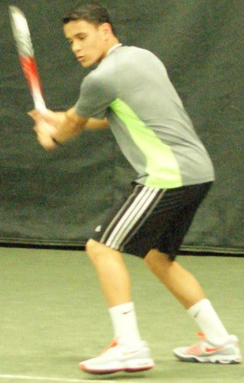

My name is Patrick, but I go by my middle name, Miles, due to family tradition. I was born in Newburyport, MA, lived in Cohasset, MA for 17 years, and moved to Warren, RI a year ago. I am currently working at Wendy's as a part-time crew member and enrolled in a C++ programming course at Bristol Community College. My other intersts include chess, tennis, squash, piano, saxophone, and cooking.
I am a college student who will be in the full-time job market soon. Please do not hesitate to contact me if you would like to work together!


Education
I graduated from Cohasset High School in 2015. I am currently a member of Connecticut College's Class of 2019, studying Computer Science.
Selected Projects
Currently, I am working on this site. Also, for Introductory Computer Science at Connecticut College, Emilio Pallares and I wrote a Python version of the game Blek which you can download here.